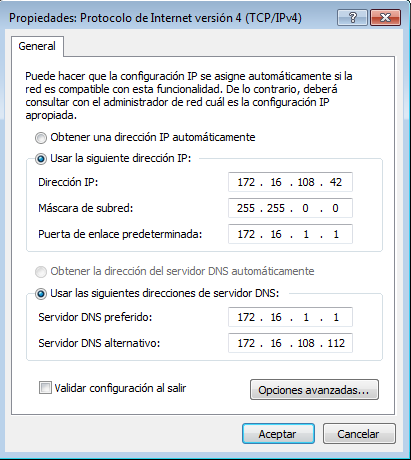

- Módulo: Sistemas Operativos
- Título del trabajo Acceso Remoto SSH
- Componentes del grupo: Efraín Hernández Morales
- Curso Académico: 2014/2015
- Fecha de entrega: 26 de Octubre de 2014
Configuramos una máquina GNU/Linux que actuará como servidor SSH. El nombre de equipo será ssh-server y el nombre de dominio será mi primer apellido (hernandez). Recordar que tendrá ip estática (en mi caso, 172.16.108.12).
Ahora comprobamos que se ha modificado correctamente, mediante los siguientes comandos:
Después, en los preparativos del ssh-server crearemos cuatro usuarios, que serán los siguientes y que usaremos mas adelante:

Por último, en /etc/hosts incorporamos las ip de nuestros dos clientes que configuraremos a continuación:
En primer lugar, le pondremos una ip estática:
Seguidamente, configuramos C:\Windows\System32\drivers\etc\hosts añadiendo la ip de nuestro servidor ssh y del otro cliente.
Y, por último, instalamos el software ssh Putty para Windows para poder establecer conexión más adelante con el servidor ssh.
Vamos a nuestro servidor SSH e instalamos el servicio ssh-server ("apt-get install openssh-server", aunque éste ya viene instalado por defecto en nuestro lubuntu).
Ahora comprobamos si el servicio se está ejecutando correctamente.
A continuación, editamos el siguiente archivo en nuestro servidor/etc/ssh/sshd_config dejando sólo una única línea: HostKey /etc/ssh/ssh_host_rsa_key. El resto de líneas las comentamos. Estas claves generales al sistema, junto con su correspondiente clave pública, se crean al instalar el servidor mediante el comando ssh-keygen.
Tras esto, reiniciamos nuestro servicio ssh.
Ahora, probaremos la conexión ssh. Para ello, vamos a nuestro cliente y vamos a la consolta y ponemos lo siguiente:
Ahora, probaremos la conexión ssh con nuestro cliente Windows. Para ello, vamos a Putty ponemos lo siguiente:
A continuación, comprobamos el contenido que se encuentra en $HOME/.ssh/known_hosts en nuestro cliente:
Si ahora vamos a nuestro server y vemos que contiene nuestra clave pública, comprobamos que es la misma clave que salió en $HOME/.ssh/known_hosts de nuestro cliente.
Después, en nuestro servidor generaremos nuevas claves utilizando el comando "ssh-keygen -t rsa -f /etc/ssh/ssh_host_rsa_key" y seguidamente reiniciamos el servicio.
Tras esto, vamos a nuestro cliente y probamos a conectarnos de nuevo.
Como vemos, se produce un fallo y no nos deja conectarnos debido a que se ha cambiado la clave en el servidor y no corresponde con la que tiene el cliente. Para que vuelva a funcionar, en el cliente, ejecutamos el siguiente comando: "ssh-keygen -f /home/efrain/.ssh/known_hosts -R ssh-server"
Y, ahora, volvemos a probar a conectarnos y esta vez si funciona bien.
Vamos a modificar el prompt, en este caso, de remoteuser1. Para esto, vamos al perfil home de remoteuser1 y editamos el archivo ".bashrc" añadiendo el siguiente código:
Ahora probamos si se ha cambiado el color y efectivamente así ha pasado:
Ahora, vamos a nuestro cliente y generaremos una clave pública para el remoteuser4 con el objetivo de que a la hora de conectarnos con este usuario no nos pida el password y se conecte directamente.
Empezamos generando una clave pública: "ssh-keygen -t rsa"
Después, copiamos la clave pública del cliente al archivo "authorized_keys" del usuario remoteuser4 en el servidor de forma remota, con el comando: "scp .ssh/id_rsa.pub remoteuser4@ssh-server:.ssh/authorized_keys".
Ahora, nos conectamos con el remoteuser4 y ya no nos pide la password.
Vamos a nuestro servidor e instalamos, por ejemplo, geany (apt-get install geany)
Seguidamente, vamos a editar el fichero de configuración /etc/ssh/sshd_config para permitir la ejecución de aplicaciones remotamente desde los clientes. Activamos la línea "X11Forwarding yes".
A continuación, nos conectamos remotamente y ejecutamos el geany. A la hora de conectarnos, añadimos el parámetro -X para poder ejecutar aplicaciones gráficas.
Instalamos el emulador Wine en nuestro servidor ssh (apt-get install wine). Wine es un emulador que permite ejecutar aplicaciones windows en linux.
A ocntinuación nos conectamos remotamente con un usuario y ejecutamos "wine notepad" (que es el bloc de notas de windows).
Usuario sin restricciones:
Ahora, vamos a restringir el acceso al usuario 1 al servicio ssh. Para ello, vamos a "/etc/ssh/sshd_config" y añadimos la siguiente línea:
Reiniciamos el servicio ssh e Intentamos conectarnos con este usuario y ya no nos deja.
Vamos a crear una restricción para que sólo las máquinas clientes con las IP's autorizadas puedan acceder a nuestro servidor.
Para esto, vamos a nuestro servidor ssh y editamos el archivo "/etc/hosts.allow" donde añadimos las dos ip donde las máquina se pueden conectar remotamente mediante ssh.
Seguidamente, editamos el fichero "/etc/hosts.deny" añadiéndole "ALL:ALL", es decir, todas las ip estan restringidas salvo la que están en "/etc/hosts.allow".
Ahora, vamos a nuestra máquina cliente que tiene una ip permitida y nos intentamos conectar y si se puede.
En cambio, si vamos a nuestra otra máquina cliente y le ponemos una ip que no esté en el rango permitido, esto pasa:
Crearemos una restricción de permisos sobre determinados programas.
Elegimos el usuario remoteuser4
Creamos el grupo remoteapps
Añadimos al usuario remoteuser4 al grupo
Buscamos donde esta instalado el ejecutable del programa "geany". Exactamente esta en "/usr/bin" y le añadimos como propietario al grupo remoteapps.
Ponemos los permisos del ejecutable de geany a 750 para impedir que los que no pertenezcan al grupo no puedan ejecutar el programa.
Si ahora intento ejecutar el programa desde otro usuario que no perteneza al grupo remoteapps pasa lo siguiente:
En cambio, si lo ejecuto desde el remoteuser4 que si pertenece al grupo: